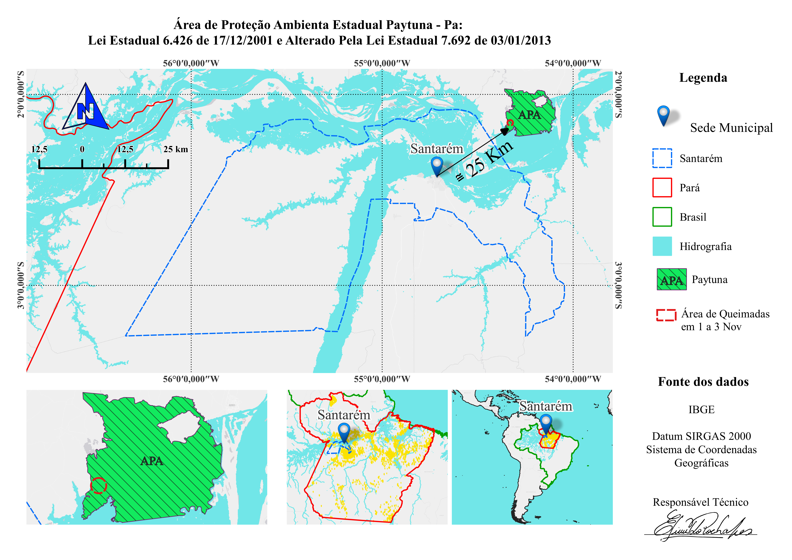
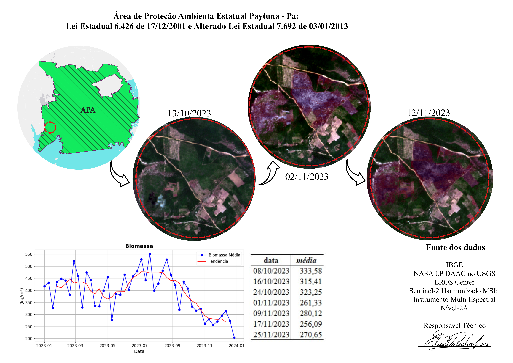
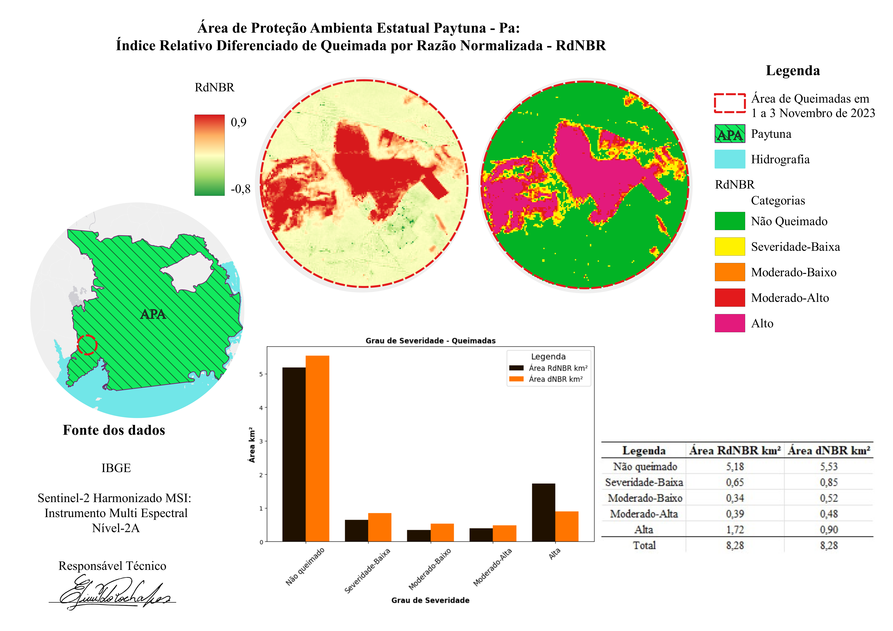
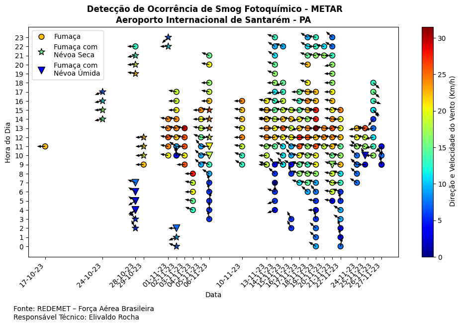
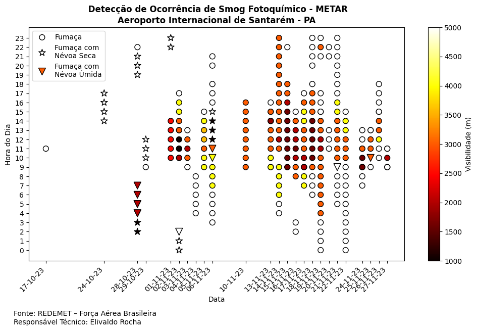
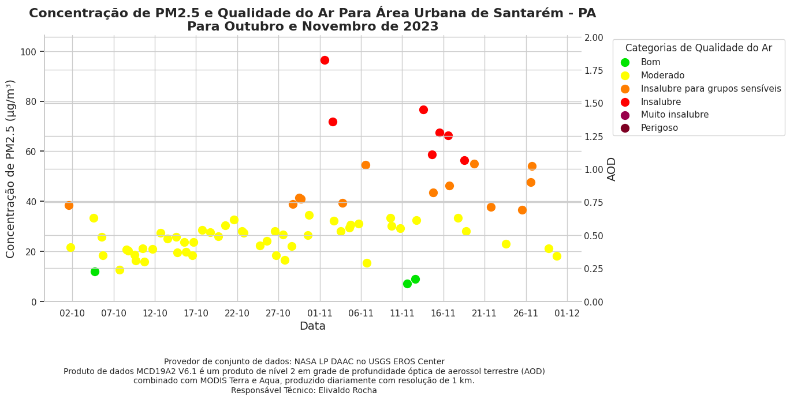

Análise dos focos de incêndio registrados na área de proteção ambiental e suas implicações.
Ler sobreDetalhes sobre a área de proteção ambiental Paytuna e sua importância ecológica.
Ler sobreVisualização da área de proteção ambiental através de imagens de satélite recentes.
Ler sobre
Estudo das condições de vento predominante e seus efeitos na dispersão de partículas.
Ler sobre
Análise da dispersão de partículas finas na área de proteção ambiental.
Ler sobreRelatório METAR com dados meteorológicos - Aeroporto Internacional de Santarém.
Ler sobreDados de visibilidade extraídos dos relatórios METAR - Aeroporto Internacional de Santarém.
Ler sobre